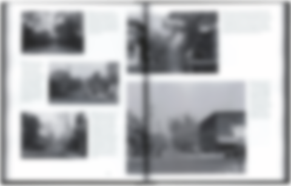
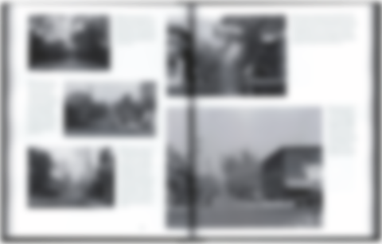

348 pgs, hardcover, 228.6 x 292.1 mm
ISBN 978-0-9947381-0-3
Transforming Ottawa was written by Alain Miguelez, one of Ottawa's lead urban planners. Alain found a box of unopened negatives in Canada's National Archives, which contained hundreds of images of Ottawa before much of it was demolished in the 1920s and 1930s. Finding these views of a beautiful old city inspired him to challenge and analyze the philosophies and decisions made by the politicians and planners of the time. The result is an inspiring thesis on Ottawa's future, paired with a block-by-block tour of Ottawa's past.
Transforming Ottawa est écrit par Alain Miguelez, l’un des principaux urbanistes d’Ottawa. Dans la Bibliothèque et les Archives du Canada, Alain a trouvé une boîte remplie de négatifs-photos de centaines d’images d’Ottawa avant une grande démolition d’édifices dans les années 1920 et 1930. Cette découverte le pousse à analyser les décisions prises par les politiciens et les planificateurs de l’époque. Le résultat est une thèse inspirante sur l’avenir d’Ottawa, jumelés avec une tournée des quartiers du temps.